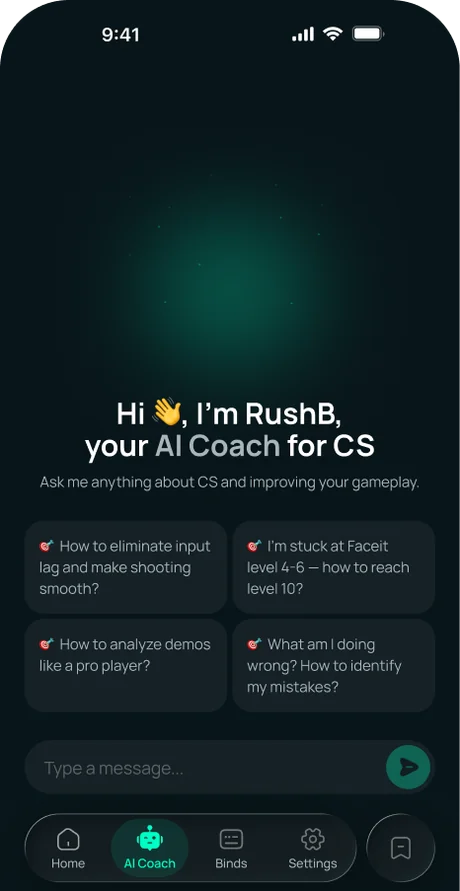

How to get FACEIT Level 10
Level 10 starts at 2,001 Elo. Here is how far you are, how many matches it really takes, and the habits that raise the one number that moves Elo — your win rate.
 Scan to get
Scan to getRushB on your phone



Level 10 in numbers
Level 10 starts at 2,001 Elo. The Elo you need is 2,001 minus your Elo, and at about 25 Elo per even match that is your gap divided by 25 in net wins — wins minus losses. From 1,500 Elo that is 21 more wins than losses.
How many matches that takes depends on one number: your win rate. Matches to Level 10 at 25 Elo per win and per loss:
| Your Elo | Elo to Level 10 | 52% win rate | 55% win rate | 60% win rate |
|---|---|---|---|---|
| 1,000 (Level 4) | 1,001 | 1,001 | 401 | 201 |
| 1,200 (Level 5) | 801 | 801 | 321 | 161 |
| 1,350 (Level 6) | 651 | 651 | 261 | 131 |
| 1,530 (Level 7) | 471 | 471 | 189 | 95 |
| 1,750 (Level 8) | 251 | 251 | 101 | 51 |
| 1,900 (Level 9) | 101 | 101 | 41 | 21 |
Put in your own Elo and win rate in the FACEIT Elo calculator.
Your win rate is the whole game
The table says it plainly: going from 52% to 55% cuts the road by more than half, and 60% halves it again. Elo follows wins, not frags — for Levels 1–9 FACEIT adds only a small amount for individual impact. So the question is not “how do I get more kills” but “what makes my team win one more round in ten”. Most of that is preparation, not aim.
Season 10 starts on December 9
FACEIT Season 10 starts on December 9, 2026, and Season 9 ends the day before. The new season opens with a soft Elo reset — the higher your Elo, the more it moves — and 10 placement matches, parties included. During placements your Elo moves more than usual and your level stays hidden until you finish all ten. Staying active before the end of the season keeps the adjustment smaller, and strong placements can start you higher.
Habits that raise your win rate
- Pick two or three maps and learn them. Knowing the standard smokes, flashes and molotovs on your maps wins rounds before the first duel. Start with our free Mirage, Inferno and Dust 2 lineups.
- Throw the utility your team needs. Five people with no nades lose to two players with a plan. Learn two executes and one retake per site.
- Queue with a friend and set up together. A duo with fixed crossfires is the most common FACEIT situation — see our solo and duo setups.
- Have a plan for every round type. Pistol, eco, force and full buy each need a default; tactics by round type help here.
- Review your losses, not your wins. One demo a day of a lost match shows the same few mistakes again and again. You can ask the AI coach what to look for.
- Don’t leave and don’t tilt-queue. A leaver gets only half the Elo even if the team wins. After two losses in a row, take a break before the next match.
How long does it really take?
At three matches a day, a 55% player starting from 1,200 Elo needs about 321 matches — roughly three and a half months. At 60% it is about 161 matches, under two months. Every point of win rate you add by preparing better is worth more than any number of matches played on autopilot.
Sources: FACEIT Support — FACEIT CS2 Elo and skill levels, Improved Elo Formula FAQ, Season 9 soft reset; Season 10 dates as announced by FACEIT.
Tools for the climb
FACEIT Elo calculator
Your level, the Elo to the next one and how many matches it takes at your win rate.
Open → NadesFree lineups by map
Smokes, flashes, molotovs and HE grenades with video for the seven competitive maps.
Open → PracticeHow to practice nades
Unlimited grenades, the grenade camera and a rethrow key — set up in two minutes.
Read →Questions
How long does it take to get FACEIT Level 10?
From 1,200 Elo at a 55% win rate, about 321 matches; at 60%, about 161. At 52% it takes about 801 matches. Your win rate decides it.
Can you get Level 10 solo?
Yes. Elo follows the team result, so a solo player climbs by winning more rounds with information and utility, not only by fragging. Queuing with a friend makes it easier to play set crossfires and executes.
Will Season 10 reset my FACEIT level?
Not fully. Season 10 starts on December 9, 2026 with a soft reset: higher Elo moves more, and 10 placement matches decide your starting point. Your level is hidden until you finish them.
Is Level 10 the highest FACEIT rank?
Level 10 is the highest level and starts at 2,001 Elo. The top 1,000 players at Level 10 hold the Challenger rank.
Get RushB on your phone
Lineups, tactics, setups, binds and an AI coach — free to download on iPhone and Android.